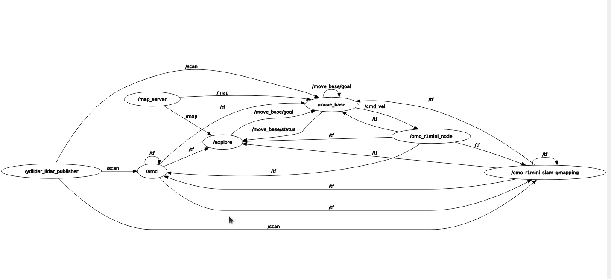
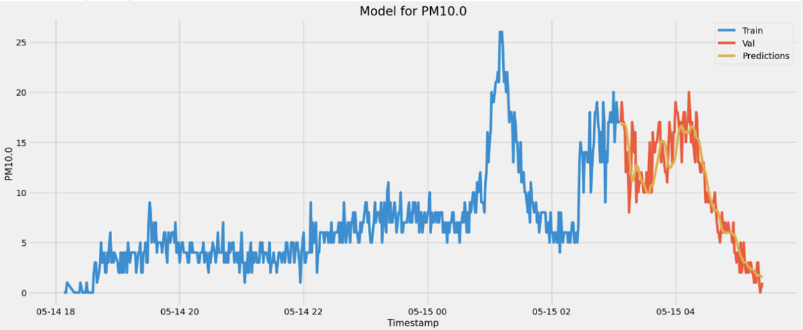

Carebuddy
Brief Description
This project focuses on developing a mobile air purifier robot using LiDAR SLAM and an LSTM-based air quality scheduling system, integrated with object detection capabilities to avoid obstacles.
Motivation
In today’s world, air quality management is crucial, especially in urban environments. This project aims to address this challenge by creating a robot that autonomously purifies the air while navigating around obstacles to ensure optimal functionality in various indoor settings.
Scenario
In an indoor home environment, the system automatically identifies the space without user intervention, learns the air quality, and manages the air optimally.
Robot Characteristics:
- Robot Model: Omo R1 Mini
- Utilizes a low-spec board and 2D LiDAR for mapping, which imposes performance limitations.
Risk Analysis:
-
Air Quality Data Learning:
The system needs to continuously learn from incoming air quality data. However, hardware limitations prevent the robot from consistently receiving and processing continuous data streams.
-
Movement:
Continuous movement is necessary for effective air purification, but the robot's battery life poses a constraint, limiting the duration and extent of its operation.
Features and Implementation
Auto Mapping
Implemented automatic mapping using ROS's gmapping and explore_lite.
Due to low-spec hardware, automatic mapping with ROS2 could not be utilized.
Instead, automatic mapping was achieved using ROS's gmapping and explore_lite packages.
Below is the implementation method of the explore_lite package.
The automatic mapping feature was implemented by adjusting the path generation parameters through the explore_lite frontier algorithm and tuning the parameters that generate the map based on gmapping's lidar scan data. The following image is the rqt graph of the final automapping implementation on the Omo R1 Mini robot.
Room Segmentation
Utilized the ipa_room_segmentation package to divide the mapped environment.
During this process, the following issues were encountered:
- Excessive space segmentation as shown in the first image.
- Coordinate mismatches of the segmented spaces on the map due to differences in the map's origin.

To address these issues, the following solutions were implemented:
- Removed adjacent points through clustering.
- Adjusted the origin in the map's YAML file.
- Used OpenCV to flip and rotate the map itself to align the map coordinates correctly.
Automapping and Navigation Demonstration
Air Quality Analysis
Collected air quality data using fine dust sensors and created an air quality prediction model using LSTM.
Web Control
Since actual users of the product may not be familiar with Linux, it is necessary to make it user-friendly.
Utilized the rosbridge_suite to include a WebSocket server, allowing web browsers to communicate with ROS.
roslibjs: Enables web applications to interact with ROS using the rosbridge protocol.
ros2djs: Renders spatial information such as robots and maps, and interactively visualizes ROS topics and messages.